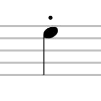

Ejemplos de adornos que se encuentran comúnmente en las partituras:
De paso:
Es una nota musical que no forma parte del acorde principal, sino que se utiliza como puente o conexión entre dos notas del acorde.
Bordadura
Es una o más notas que rodean a la nota principal por grados conjuntos o cromáticamente. Puede ser ascendente (superior) o descendente (inferior): La bordadura ocurre en la parte débil del compás.
Trino:
Consiste en alternar rápidamente entre dos notas que están a un intervalo específico.

Mordente:
Consiste en una rápida alternancia entre una nota principal y una nota superior o inferior.
Apoyatura:
Es una nota corta que se toca antes de la nota principal y se resuelve en ella. Se representa con una pequeña nota adicional con una barra oblicua sobre la nota principal.
Grupeto:
Similar al trino, pero más corto y rápido. Se indica con una pequeña figura similar a un trino con una línea vertical a través de ella.
Staccato:
Indica que la nota debe tocarse de forma breve y separada de las siguientes notas. Se representa con un punto encima o debajo de la nota.
Legato:
Indica que las notas deben tocarse de forma suave y conectada entre sí. Se representa con una línea curva que conecta las notas.
Estos son solo algunos. Cada uno añade su propia textura y expresividad a la interpretación, y es importante entender cómo ejecutarlos correctamente para transmitir la intención del compositor.